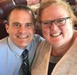

I was born and raised in Rockford, Iowa, which is a small rural community in North Central Iowa. My graduating class was 50 students. I then attended the University of Iowa for five and a half years, but did get a BBA in Finance and minor in Marketing. I worked as an accountant first for Kinseth Hospitality, then for Oral-B Laboratories for 8 years. I lived in North Liberty during that time. I was very active with Johnson County Juvenile Court and Youth for Christ mentoring teenage boys. As an avid sports fan I used basketball and even baseball to create new opportunities for youth in the Iowa City/North Liberty area. In my spare time I refereed basketball and umpired baseball - serving as the 13-15 year old baseball commissioner for the old Eastern Iowa Hawkeye Conference.
My second career took me into teaching high school, which is what I'm currently doing. I have taught at Alburnett High School, Union Community School District, and Waterloo Schools. I currently teach at the Waterloo Career Center.
I met me outstanding wife Jill Kuhlers in college, where she was my boss. I was a tour guid in the admissions office. About the time I was switching careers we reconnected and eventaully got married. We have two awesome boys; Travis is 32 years old and joined our family when he was 15 years old, a freshman in high school. Josh was born in 2006 and is now a teenager! We have a cat named Hadley and a turtle named Snappy.
